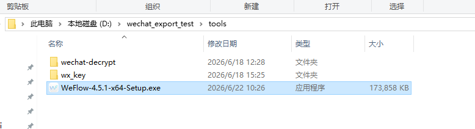
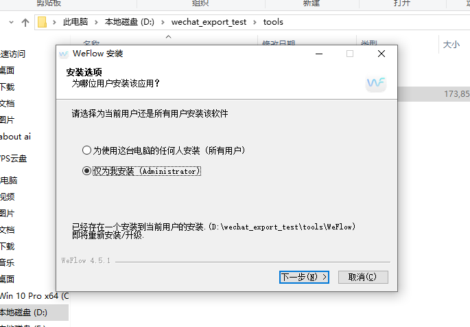
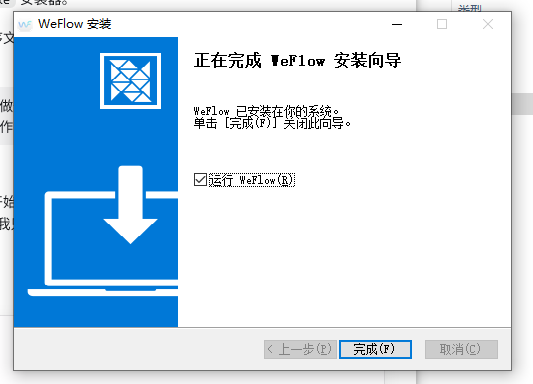
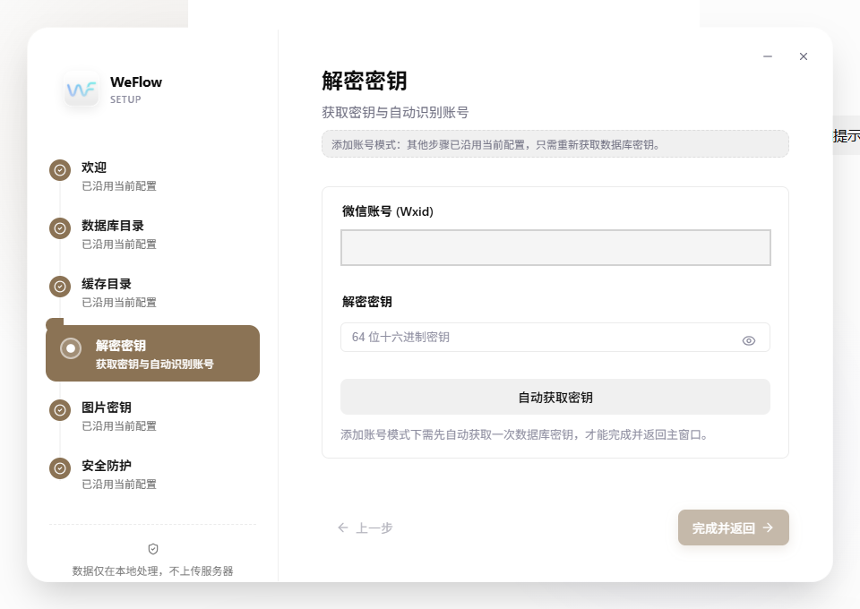
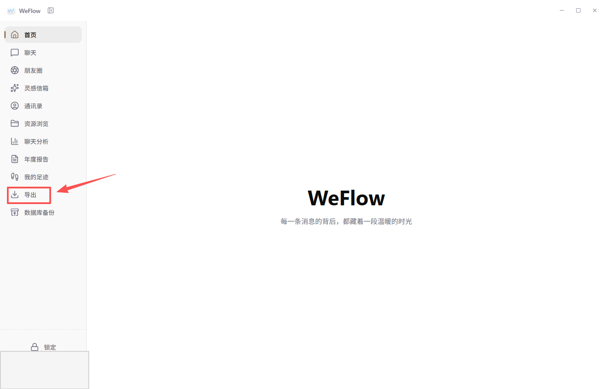
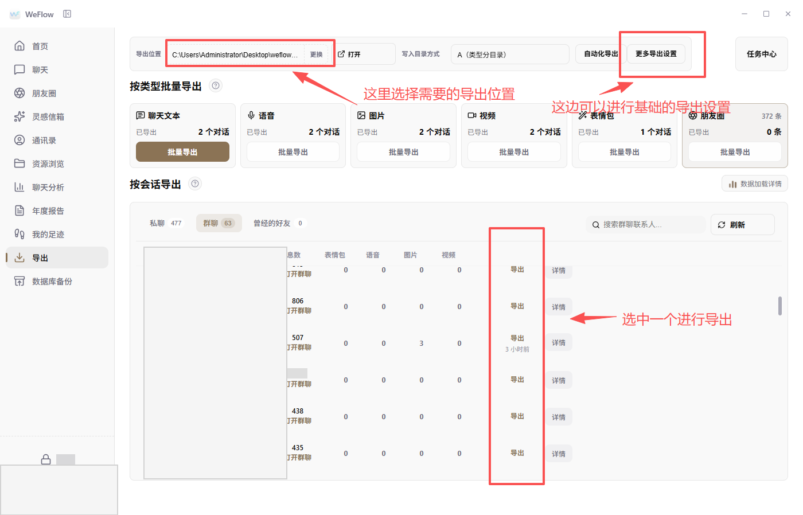
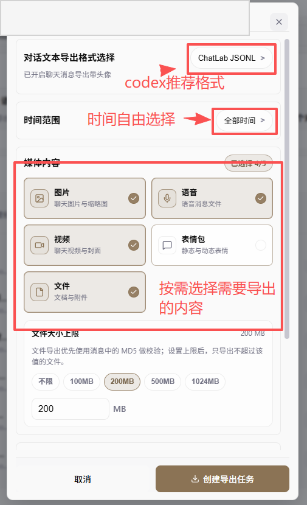
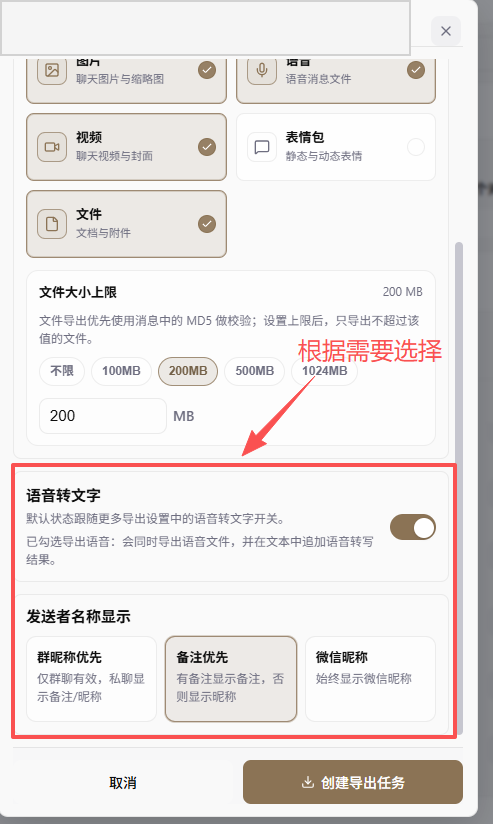
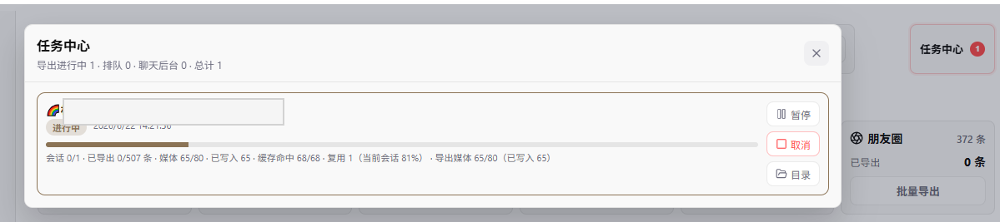

WeFlow 微信聊天导出截图教程
这是一份给同事看的“照着点”教程。先看本教程，再把同目录下的 给Codex的完整启动提示词.md 复制给 Codex。真正的工具包由 Codex 从 GitHub Release 下载。
先别离开电脑：前 5 分钟 Codex 可能会请求访问 GitHub、下载文件、读取目录或安装 Skill。请等这些权限确认完，再去忙别的事情。
这是一份给同事看的“照着点”教程。先看本教程，再把同目录下的 给Codex的完整启动提示词.md 复制给 Codex。真正的工具包由 Codex 从 GitHub Release 下载。
打开同目录下的 给Codex的完整启动提示词.md，全文复制给 Codex。Codex 会先做权限预检，再去公共 GitHub 仓库下载工具包。
仓库地址是：https://github.com/dongximuye/weflow-wechat-export-kit
Codex 会优先从 GitHub Release 获取工具包。你也可以根据 Codex 指引手动打开安装器所在位置。
找到 WeFlow-4.5.1-x64-Setup.exe，双击打开。

通常选择“仅为我安装”，然后点击“下一步”。如果电脑空间紧张，请选择 D 盘等空间较大的位置。

完成安装时保留“运行 WeFlow”勾选，点击“完成”。桌面通常也会出现快捷方式。

WeFlow 首次配置时可能需要确认微信数据库或文件目录。不要凭感觉猜路径，按下面方式找：
如果电脑之前配置过 WeFlow，可能直接进入“解密密钥”页面；这是正常现象。

点击左侧“导出”。

顶部选择空间充足的导出位置；在“私聊”或“群聊”中搜索目标会话，点击右侧“导出”。

文本格式建议选择 ChatLab JSONL，这是更适合 Codex 读取和完整性检查的结构化格式。时间范围按需要选择；媒体按分析需要勾选图片、文件、语音、视频、表情包。

文件大小上限会影响能否导出大附件。无法预判时，优先保证完整性。群聊发送者名称一般可选“备注优先”或“群聊昵称优先”。

点击“创建导出任务”后，进入任务中心。任务仍在进行中时，不要移动导出目录，也不要说已经成功。

任务完成后，把完整导出目录路径发给 Codex。不要只给单个 JSONL，也不要改变 texts、images、file、videos 等目录的相对位置。
export_integrity_report.md。